Final project: Development
Electronic
The board is designed based on the schematic of the CNC board by Ryan Pourcillie
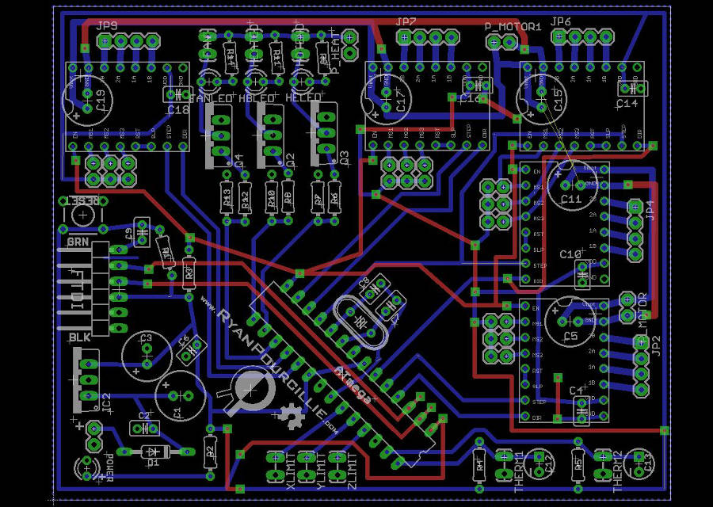
His schematic was mainly useful as a reference for the capacitors used and the solution used.
Here the schematic I made, based on his:
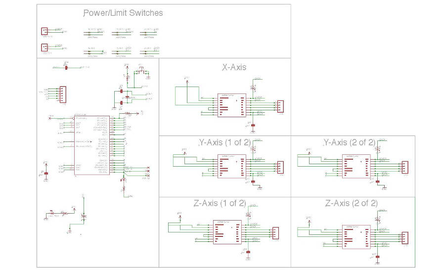
And here the board:
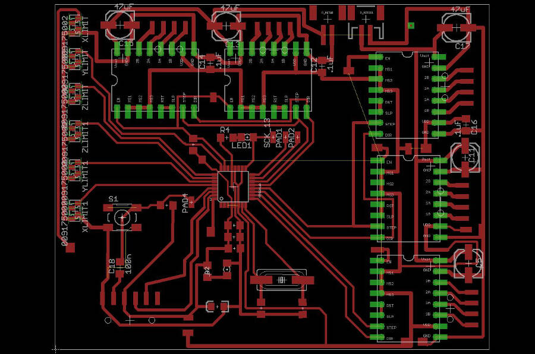
It was pretty easy to connect almost everythig, these are the main issues:
- One of the traces must pass on the corner of ATMEGA 328P
- The endstops hve no external pull-up resistors (i hope to fix this using the internal ones)
- The enable of the stepper drivers and one of the endstop must be connected with jumpers
Beside be careful in placing the traces in the center of the corner, I did a small modification on the shape of the pad in inkscape, just to have a little bit more room. So here it is the original image:
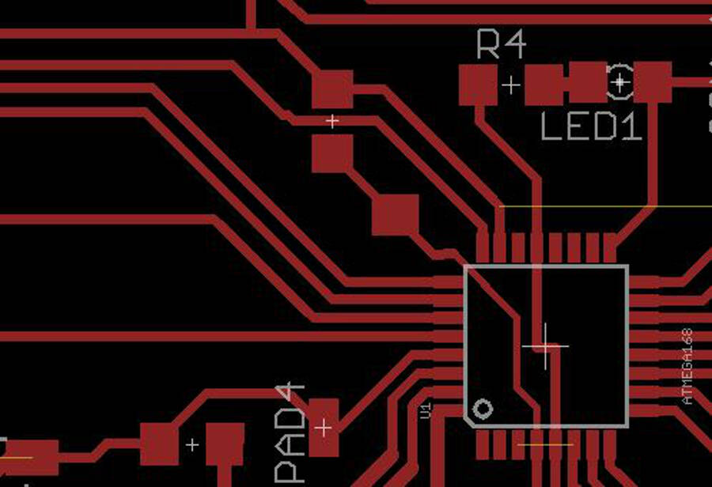
And here the small adjustment done in inkscape:
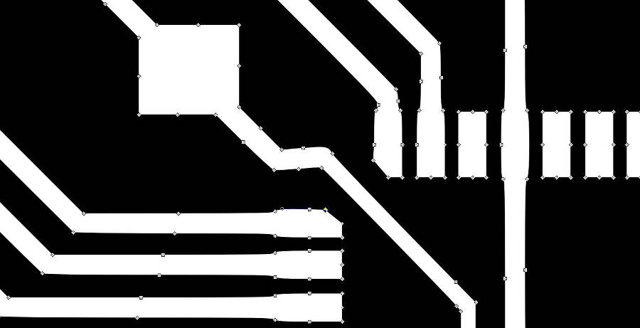
I had no problem to solder the ATMEGA 328p without shortcircuiting anything.
To make the board a little bit easier to read, I add some simple "silks" (like "GND", "Z - Axis", "+", etc.). They're pretty fragile, but still useful to have.
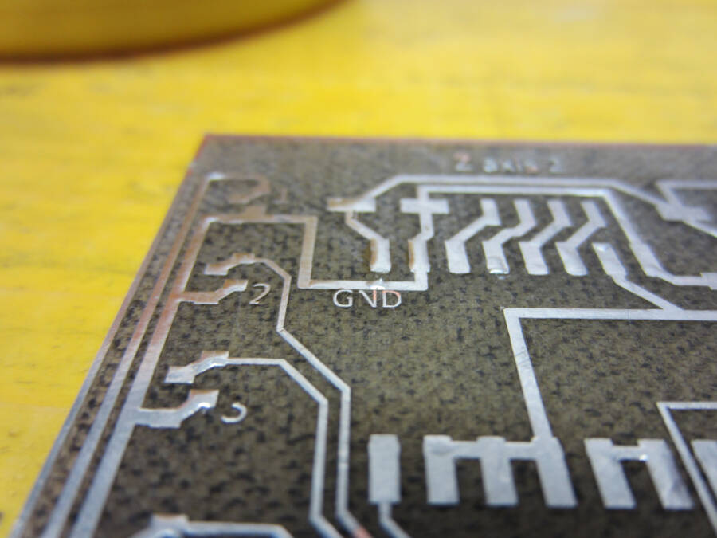
Here the jumper used:
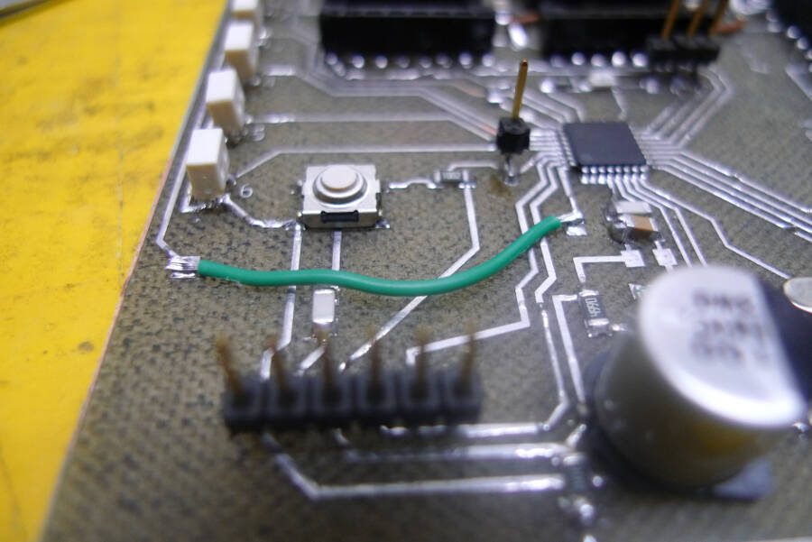
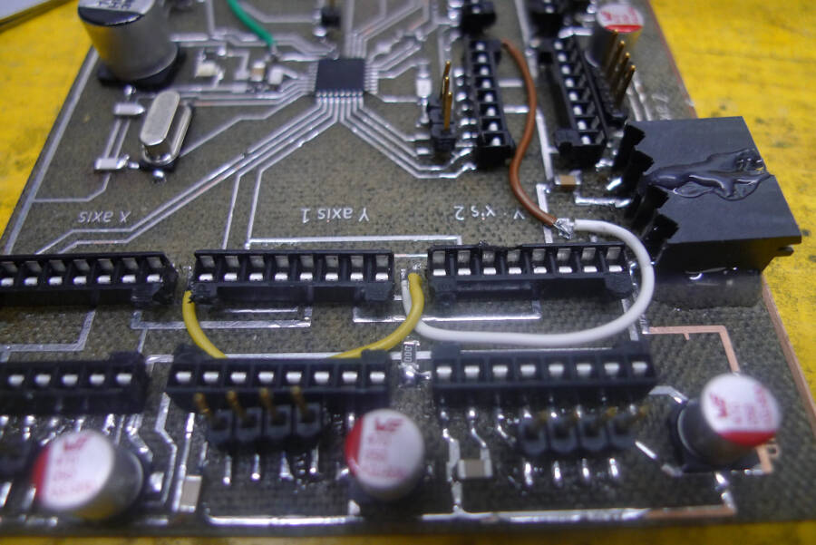
The driver used are the DRV8825 Stepper Motor Driver, that can get to 1,5 A without cooling. I'll probably need more current, but it coul work for the tests. To improve the performances I added a passive cooler
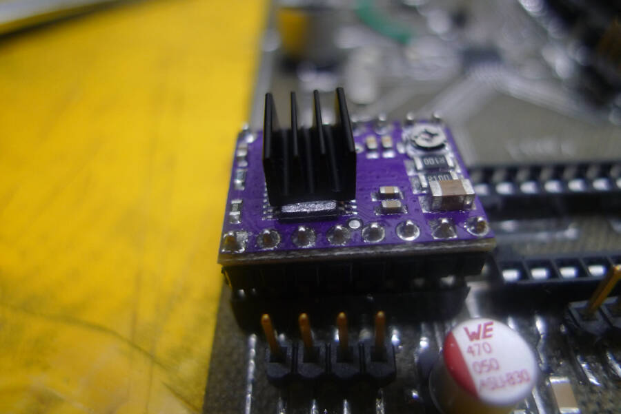
The board has a connector for the FTDI and four pins to be programmed (SCK, MISO, MOSI, RESET). There pins can be removed after the debugging.
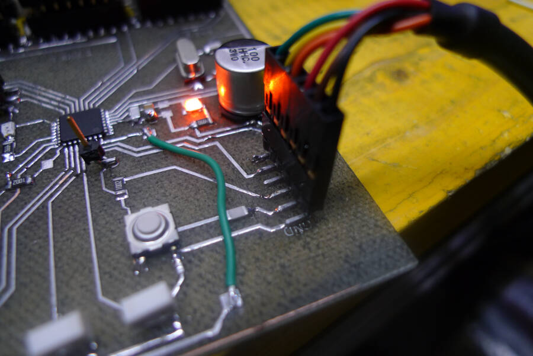
So far, I tested the board and it seems there are no electrical issues and the clock is working properly (I used a simple blink and a watch to do a very basic test).
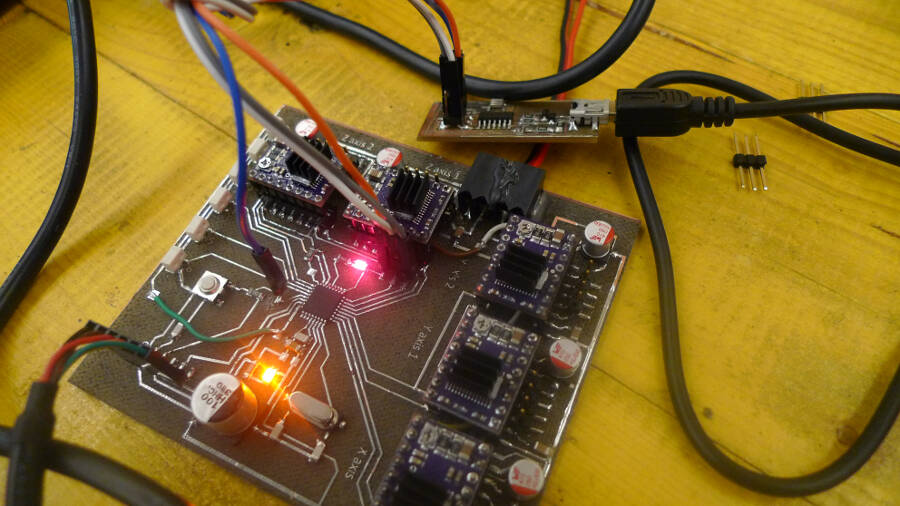
Debug and V0.2
after the first test i noticed the following problems:
- Return of current from the motors power supply
- Add (and then take away) pull-up resistors
- Mistakes in pin mapping, because of the way the Grbl is written
- Wrong stepper drivers wiring
- TX\RX connection flipped
the board had two different circuits with a common GND, one at 12V for the motor and one at 5V from the FTDI cable. I tried to power the board with the FTDI and to upload the blink to check clock and the main circuit and everything worked fine. After that I tried to power the motod circuit at 12V. I had no shortcircuit but, because of something I don't know, from the 12V circuit an instable current (approximately from 1.8V to 2.7V), passed to the 5V circuit.
/* immagine con tester */
I tried to cut some traces without finding the problem, so it's still a mistery.
Add (and then take away) pull-up resistors
The endstops have no pull-ups resistors (too complex to wire everything on the board), thinking to use the internal ones in the ATMEGA328p. After I tested (unsucessfully) the board, I thought to avoid any problem by adding external resistors.
\*foto resistenze volanti*\
checking better the Grbl I actually noticed that the resistors are activated by default so i decided to desolder the external i added and I'm not going to try to modify the board for that.
Mistake in pin mapping, because of the way the Grbl is written
I will use a modified version of Grbl, both because of the documentation you can find about it, and because i can fit it in the ATMEGA 328P. Reading the code I noticed that some pins cant be remapped: the information about step and dir of the motors are writtend not pin by pin but writing the Port and the DDR, so it's important to don't change over a certain limit. Here the wrong modification I was doing
/*immagine con mapping */
This wasn't enough but it's definitely something to integrate on the next one.
I noticed that inverting two connections the mapping could be done properly, so I modified the board for the testing
/* immagine con i cavetti volanti */
Wrong stepper drivers wiring
I followed the wiring of original board, but the stepper driver I'm using (the DRV8825), has a compatible but not exactly identical wiring. Here the original drivers used on the shapeoko board
 While the one I used are
While the one I used are
 The main mistake was actually another one: I wired microstepping and emable to 5V, while to enable the board it should be grounded.
The main mistake was actually another one: I wired microstepping and emable to 5V, while to enable the board it should be grounded.
- test drivers + motors with a temporary code (Processing + Firmata)
- Test the grbl on this board, after have properly mapped the pins of the ATMEGA 328p
Y movement
The most tricky part is probably how to move the machine along Y. I started following this solution:


This allow me to dismount the machine without too many problems.
The first solution to test is to use a circular belt moved by a stepper that use a secont linear belt glued to the rail as a rack.
A - Circular belt
B - Pulley
C - Y motor
D - Linear belt (rack)
The solution I made so far is wrong dimensionally but the idea could work
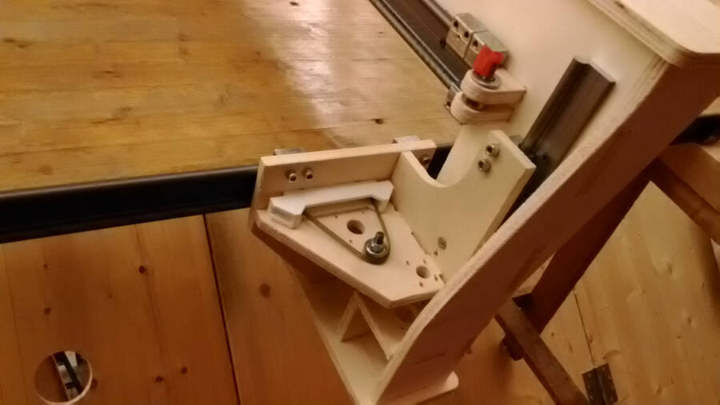
It works like a caterpillar track that moves over another timing belt used as a rack.
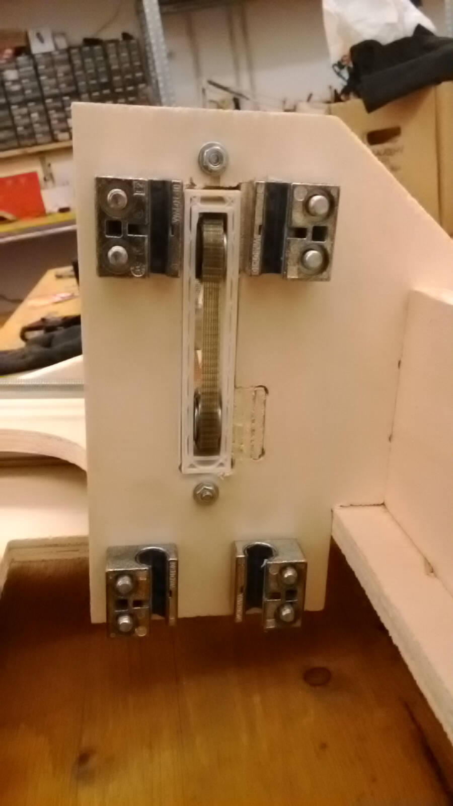
To guarantee the proper pressure and avoid backlash, the structure is preloaded with springs
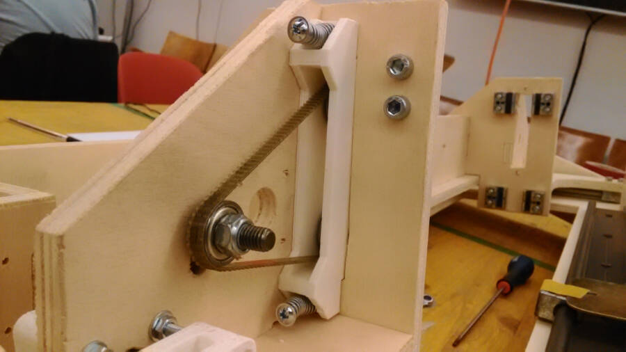
{kind=link}
Z movement
To move in Z the entire machine is sliding down. This seems to me the most rigid way to move the structure instead of have a Z axis made as usual. The objective was to keep the force loop as short as possible.
Here two Z position compared (first high and then low)
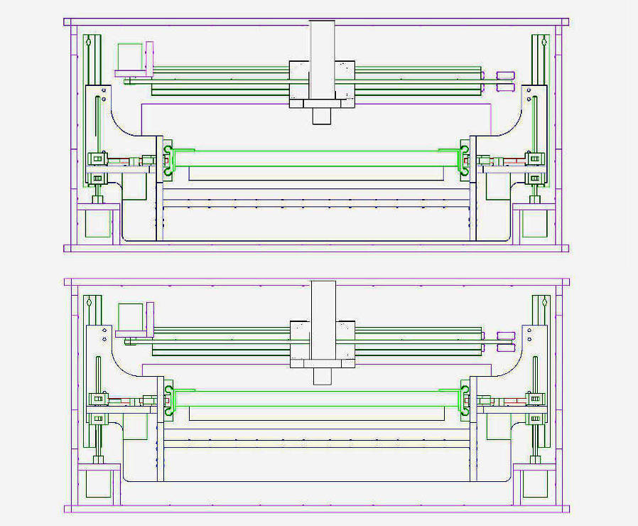
The movimentation is done with two motors and two threaded bars. To avoid the backlash I designed two 3D printed parts preloaded with a spring and aligned with four screws
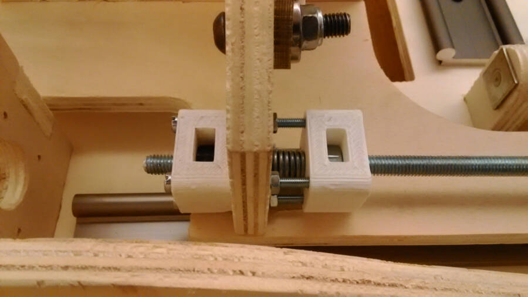
Next Steps
There is still a long run to do. This is going to be my check list: